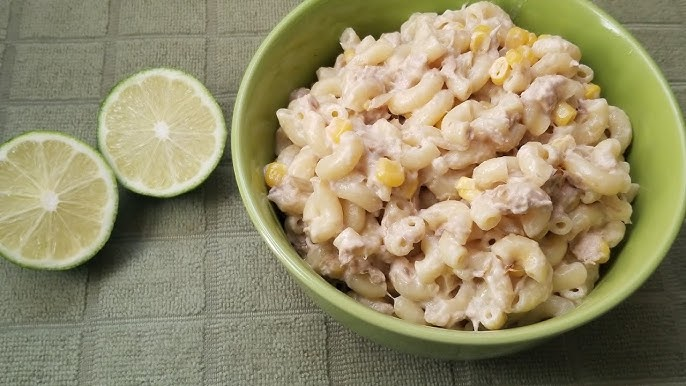
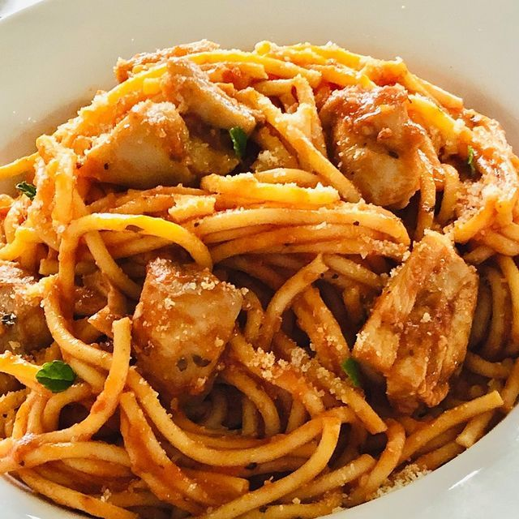

Esta es una ensalada de coditos con atún, como su nombre
bien lo indica es una ensalada hecha de pasta Milano con atún, mayonesa, maiz, cebolla, etc. Es una
comida muy rica y fácil de preparar.
Recuerdo que la primera vez que la probe fue durante la cena
de navidad del 2019, mi madre la preparó y aunque no le di mucha
importancia en ese momento, fue lo que me pase comiendo el dia
siguiente, cada noche hasta que se acabo, y desde entonces en cada
cena de navidad ella lo prepara para mi siempre me paso los dias
sigueientes en cada comida comiendola hasta que se acaba.


Es el plato por excelencia de las "espaguetadas" en la playa o el río. Se llevan en una olla grande porque es una comida que "rinde mucho" y se mantiene sabrosa incluso a temperatura ambiente.